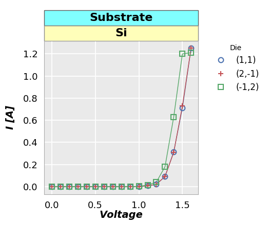
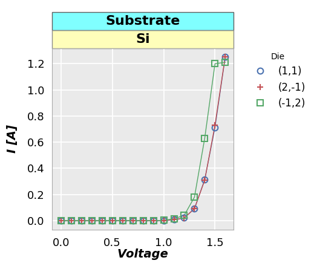
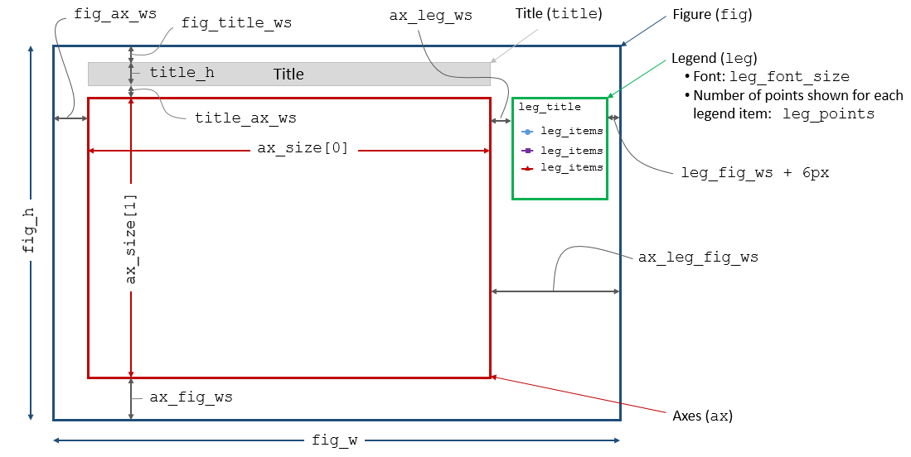

Keyword Arguments¶
All inputs to fivecentplots are treated as keyword arguments. The only mandatory inputs are:
All other keywords that can be used for grouping data, setting axis limits, and styling the look of the plot have built-in defaults that can be overriden by explicitly setting them in the plot function call or by saving them in a user theme file.
Data¶
Elements¶
Each item in a plot (axis, labels, legend, etc.) consists of an Element object
that contains various attributes (color, size, style, etc.) that
describe the element. Depending on the element, these base attributes
can be:
- overriden with new values
- not used at all (i.e., a label has a
fill_colorbut not a plot linewidth)- joined with unique attributes that only pertain to the element at hand (i.e., an x-axis range can be shared across all subplots with the
share_xkeyword, but this attribute would be meaningless for a label)
Nomenclature¶
Some attributes and their keyword arguements are unique to a given element. However, many keywords inputs are similar in nature between many different elements (like fill or edge color) and can be accessed using a standard nomenclature:
Keyword Naming Scheme
<element name>_<major|minor axis type (if any)>_<x|y|z axis (if any)>_<element attribute name>
Consider the following examples:
Change the x label font color to red:
label_x_font_color = ‘#FF0000’
Change the y-axis minor gridline width:
grid_major_y_width = 2
Change the axes edge color to black:
ax_edge_color = ‘#000000’
Default attributes¶
The base attributes of each Element are:
| Category | Keyword | Description | Default | Example |
|---|---|---|---|---|
| Fill | fill_alpha | fill color opacity [0 (fully transparent) - 1 (opaque)] | 1 | https://test.org |
| fill_color | fill color (hex color code) | #ffffff | https://test.org | |
| Edges | edge_alpha | edge color opacity [0 (fully transparent) - 1 (opaque)] | 1 | https://test.org |
| edge_width | width in pixels of the element border | 1 | https://test.org | |
| edge_color | edge color (hex color code) | #ffffff | https://test.org | |
| Fonts | font | font name for element text | sans-serif | https://test.org |
| font_color | font color (hex color code) | #000000 | https://test.org | |
| font_size | font size in pixels | 14 | https://test.org | |
| font_style | font style [‘normal’, ‘italic’, ‘oblique’] | normal | https://test.org | |
| font_weight | font weight [‘light’, ‘normal’, ‘medium’, ‘semibold’, ‘bold’, ‘heavy’, ‘black’] | normal | https://test.org | |
| Lines | alpha | line opacity | 1 | https://test.org |
| color | line color (hex color code) | #000000 | https://test.org | |
| style | line style [‘-‘, ‘–’, ‘-.’, ‘:’] | https://test.org | ||
| width | line width in pixels | 1 | https://test.org | |
| Other | on | toggle visibility of the element | depends | https://test.org |
| size | [width, height] of the object | |||
| text | label text associated with the object |
Specific Elements¶
Listed below are the additional keyword arguments of specific elements (each element
also contains the base attributes of the Element class and can be used if applicable.
Axes¶

The axes element consists of the actual plotting window shown in yellow above.
Keywords for the primary axes object begin with the prefix “ax_”. Properties
of any optional secondary axes begin with the prefix
Keyword Prefix
Primary axis: ax_
Secondary axis: ax2_
| Keyword | Data Type | Description | Default | Example |
|---|---|---|---|---|
| size | list of ints | width, height of plot area | [400, 400] | None |
| ax_edge_color | str | outer edge color of plot area | #aaaaaa | None |
| ax_fill_color | str | inner fill color of plot area | #eaeaea | None |
| ax_scale | str | enable linear vs log scaling of axis | log scale plot | |
| x-axis: [‘linear’, ‘logx’, ‘semilogx’] | ||||
| y-axis: [‘linear’, ‘logx’, ‘semilogx’] | ||||
| both: [‘loglog’, ‘log’] | ||||
| other: [‘symlog’, ‘logit’] | ||||
| share_x | boolean | enable/disable primary x-axis range sharing across all subplots | True | None |
| share_y | boolean | enable/disable primary y-axis range sharing across all subplots | True | None |
| share_z | boolean | enable/disable primary z-axis range sharing across all subplots | True | None |
| share_x2 | boolean | enable/disable secondary x-axis range sharing across all subplots | True | None |
| share_y2 | boolean | enable/disable secondary y-axis range sharing across all subplots | True | None |
| share_col | boolean | enable/disable axis range sharing for all subplots in a column of subplots | False | None |
| share_row | boolean | enable/disable axis range sharing for all subplots in a row of subplots | False | None |
| twin_x | boolean | enable/disable a secondary y-axis (x-axis is “twinned” or duplicated across two y-axes) | False | twin_x plot |
| twin_y | boolean | enable/disable a secondary x-axis (y-axis is “twinned” or duplicated across two x-axes) | False | twin_y plot |
Note: wrap plots cannot be used when twin_y == True |
Boxplots¶
Color Bar¶
Confidence Intervals¶
Contour¶
Figure¶

Note
To style the figure region in yellow for this example, the following keywords were
used in the fcp.plot command:
fig_edge_color='#000000', fig_fill_color='#fffd75', fig_fill_alpha=0.5
Notice, we are just accessing default Element class attributes and prepending
the keywords with the element name, fig_ in this case.
The figure element is the full window in which other elements are rendered.
Most of the figure region is covered by these other elements but the visible
portion (shown in yellow above) can be styled. figure elements can also
be subdivided into multiple subplots to display more data. Unlike matplotlib,
size of the figure window is caluculated automatically by the sizes of the discrete
elements it contains. It cannot be set directly.
Keyword Prefix
fig_
| Keyword | Data Type | Description | Default |
|---|---|---|---|
| dpi | int | dots per inch | |
| size | list | size of the figure window | calculated automatically |
Gridlines¶
Labels¶
 

The following types of label elements can exist in a plot:
axis labels:
label_x,label_y,label_z(colored in salmon above)Note
All axis labels can be styled together using only the prefix
labelwith no axis designationrow, column, and wrap labels:
label_row,label_col,label_wrap(colored in yellow above)Note
All row, column, and wrap labels can be styled together using only the prefix
rc_labelwrap titles:
wrap_title(colored in cyan above)
label for label_x
rc_label vs label_row, label_col, label_wrap
Legend¶
Line Fit¶
Lines¶
Markers¶
Ticks¶
Title¶

The title element (shown above in yellow) adds a title to the top of the figure.
The title text is added directly via the title keyword:
title = 'IV Data'
Whitespace¶

Data¶
Other¶
show